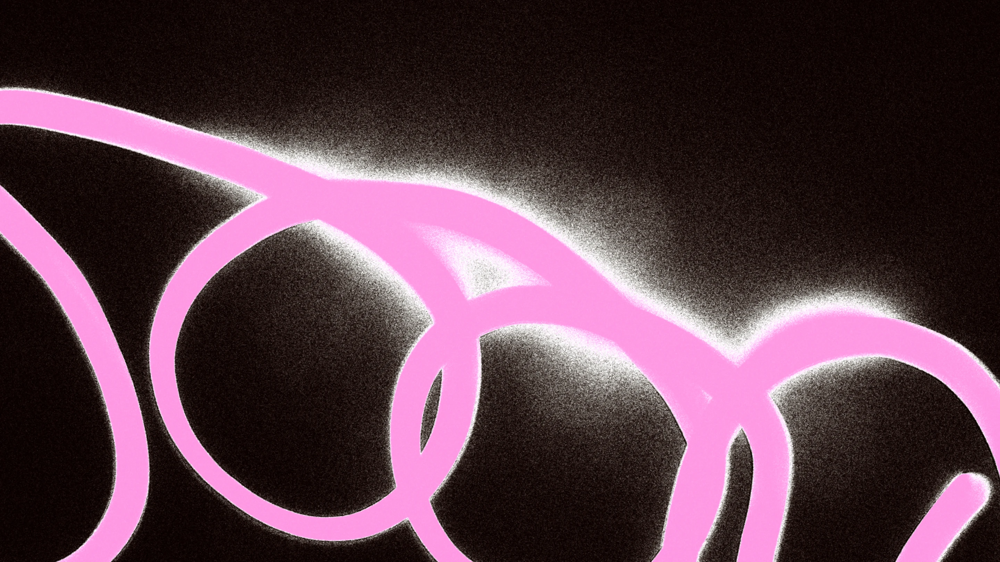

Overview
Blink is a motion design festival inspired by the restless energy of urban life and the speed at which the world unfolds in the blink of an eye. Through overlapping elements, noisy textures, flashes of light and vibrant colours, its visual identity captures the constant movement of the streets across digital and physical touchpoints.
Concept & Art direction
A visual language in constant motion.
The street is the starting point. It is where movement happens without a script: people cross paths, encounters are spontaneous, and nothing stays still for long.
Blink's graphic language borrows that behaviour. Elements overlap instead of sitting neatly side by side. Noisy textures roughen the surfaces. Flashes of light cut through the compositions, and vibrant colours keep them charged. The result is layered and unpredictable — a city in constant flux, and a fitting register for a festival dedicated to motion.
Website Experience
Everything you need to find your way in.
The website brings together the information attendees need to discover the festival and plan their experience. From the programme and speaker profiles to ticket options and event locations, the interface provides a central point of access to the festival's key information.
The speaker section introduces the invited artists and their work, while individual profiles offer a closer look at each conference participant. The ticketing section presents the available passes, prices and purchase links, helping visitors identify the option that suits them. FAQs address practical questions, making essential information easy to find.
The experience also extends the visual identity into the site's structure. An experimental footer brings together logos, partners and contact information, closing the page with the same graphic expressiveness that defines the festival.
App Experience
The whole festival, at one glance.
Designed to accompany attendees throughout the event, the mobile app brings the festival programme, live talks and professional networking together in one place.
The programme allows users to explore the festival schedule, while live streaming makes talks accessible to those unable to attend in person. The app therefore supports different ways of participating in the festival, whether on-site or remotely.
Networking is built around personal profiles and QR code exchange. Each attendee can share a professional profile containing their name, company, role and location, alongside an optional indicator showing whether they are open to commissions or collaborations. By scanning another attendee's QR code, users can save their profile to a personal contact library and revisit the information later.
Together, these features make the app both a practical festival companion and a tool for maintaining connections beyond individual talks and encounters.
Interactive Experience
A shared canvas for collective movement.
Blink's digital experience extends beyond personal screens through an interactive installation designed for a large horizontal display within the festival venue.
Conceived as an opportunity for playful and experimental participation, the installation connects the festival's visual identity with a shared, large-scale digital experience. It creates a space where attendees can engage with the festival collectively, extending its visual language into the physical environment.
Merchandising
A moving identity, beyond the screen.
Merchandising takes Blink off the screen and back into the physical world where the concept began. The same overlapping compositions, textures, flashes of light and colour carry over into physical applications, so the festival remains recognisable whether it appears on a phone, in a browser or out on the street.
Closing
Every touchpoint answers to the street.
From the first digital encounter to the connections made in person, Blink brings its central idea of movement to every part of the festival experience. Visual identity, digital interfaces and physical applications work together to express a world that never stands still — one that keeps unfolding, moment after moment, in the blink of an eye.